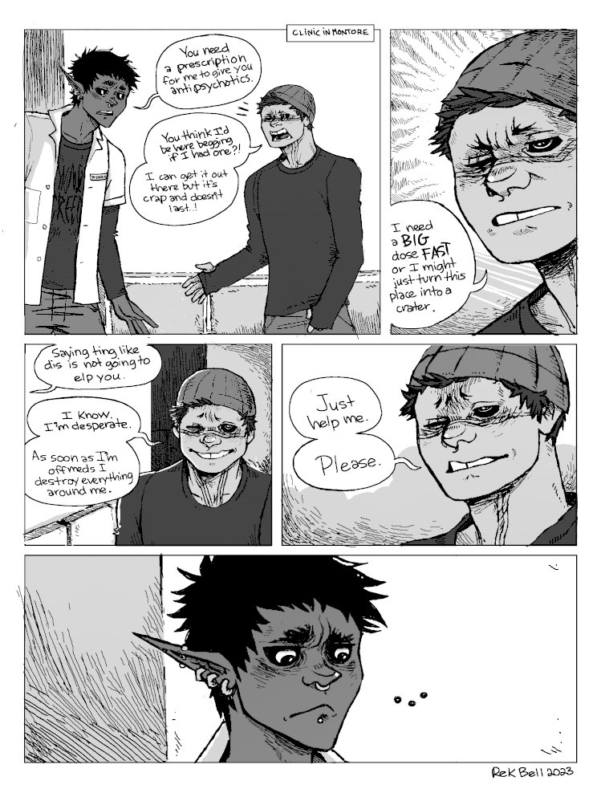
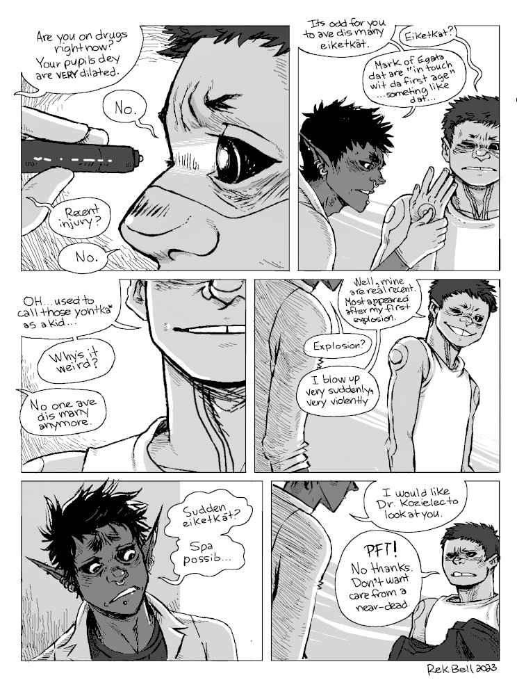
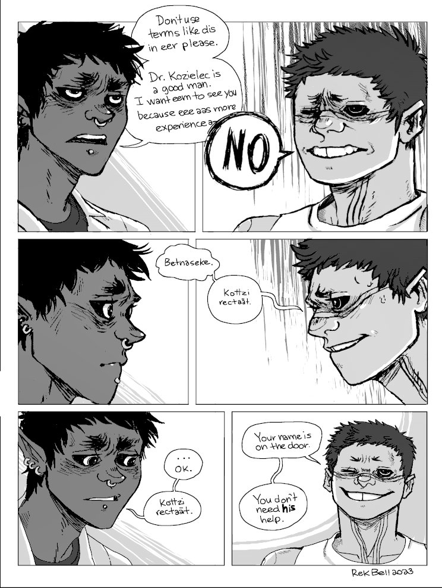
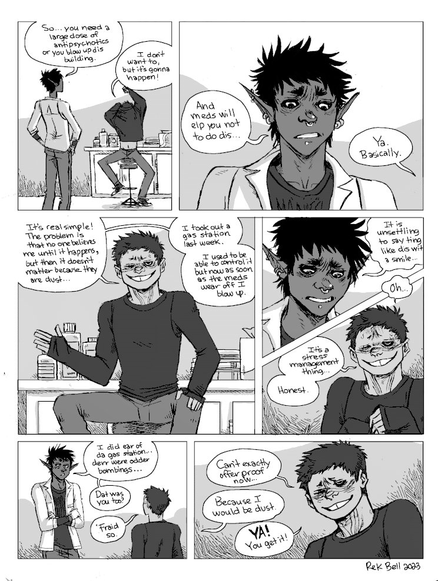
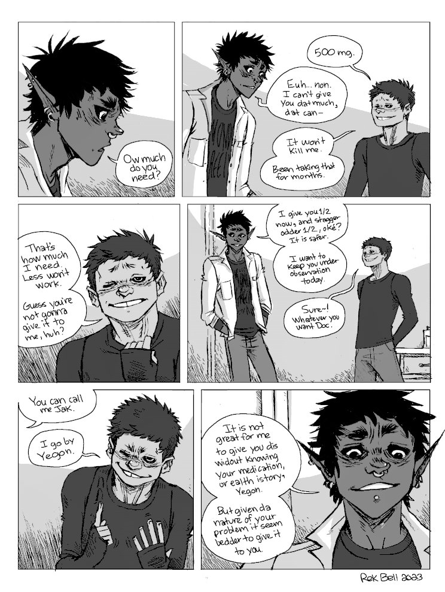

Meds
Context. hakazi(uses the name Yegon now) has been on his own for a while in Montore after leaving the Solo Devs(yet again), following a fight with ikkard and kaddali. His symptoms are getting worse, he can no longer control his outbursts. To try and limit the damage he causes, he visits a clinic in Montore (owned by jak and nemerald) to try and get some meds.
I will add sequences that precede and follow this one soon.
Hand Speak. In this sequence, Hakazi uses a bit of Hand Speak, somewhat unconsciously. He now goes by the name Yegon, but when introducing himself aloud he still signs his former name(Haka-zi, growing-tree). Hand Speak is a trade language once the lingua franca across what is now central Canada, the central and western United States and northern Mexico. I've added Hand Speak images(drawn by A. J. Stover) from a by William Tokins(published in 1926).
Jak's second language is màkoua(French dialect), this explains why he doesn't pronounce certain words correctly (dis, dat instead this, that).
- Spa possib - It's not possible, contraction of "Ce n'est pas possible"
In this comic, Hakazi and Jak use the following Kataluk words:
- Koπzí - friends(but more than this), to come from the same tree(same community)
- Recπaãt - alone
- Betna - wish/pray
- Seke- to do
- Betnaseke - please, lit: to do pray/wish
- Eiketkãt - ancient markings on hegata indicative of a strong Katkum spirit, lit: forest oath stripes
- Youtka - war paint
Content Warning. Some swearing.
    
Go back to the hakum main page.